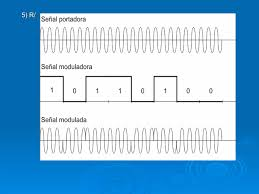
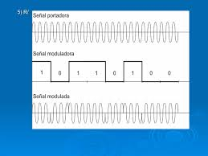

PSK varía la fase de la portadora para representar información digital. Proakis destaca su alta eficiencia.
En PSK, los cambios de fase representan distintos símbolos. Variantes como BPSK y QPSK permiten mayor eficiencia y resistencia al ruido. Haykin señala que PSK es ampliamente usada en comunicaciones satelitales.
 

En conclusión, PSK es una técnica robusta y eficiente para la transmisión digital.